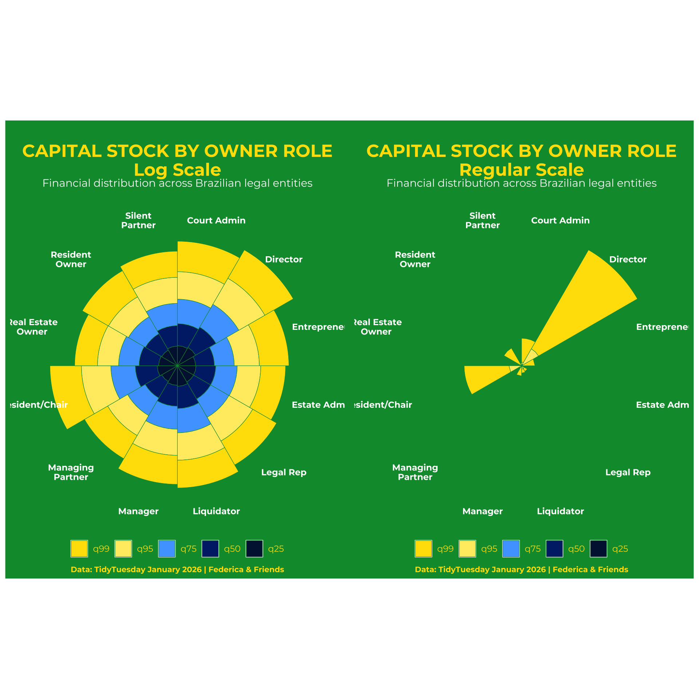

Code
library(patchwork)
# brazil theme palette
brazil_green <- "#009739"
flag_palette <- c("#FFDF00", "#FFEC70", "#4DA6FF", "#002776", "#01153E")
log_scale <- quantile_data |>
mutate(percentile = forcats::fct_rev(percentile)) |>
#factor for stacks
ggplot(aes(x = owner_qualification, y = log_quantile)) +
geom_bar(aes(fill = percentile), stat = "identity",
width = 1, color = brazil_green, linewidth = 0.2) +
scale_fill_manual(values = flag_palette) +
coord_polar() +
labs(
title = "CAPITAL STOCK BY OWNER ROLE\nLog Scale",
subtitle = "Financial distribution across Brazilian legal entities",
caption = "Data: TidyTuesday January 2026 | Federica & Friends"
) +
theme_void() +
theme(
plot.background = element_rect(fill = brazil_green, colour = brazil_green),
panel.background = element_rect(fill = brazil_green, colour = brazil_green),
text = element_text(family = "montserrat", color = "#FFDF00"), # contrasting colour
# nice settings for titles
plot.title = element_text(face = "bold", size = 18, margin = margin(t = 20), hjust = 0.5),
plot.subtitle = element_text(size = 11, color = "white", margin = margin(b = 10), hjust = 0.5),
plot.caption = element_text(size = 8, margin = margin(t = 10), hjust = 0.5, face = "bold"),
axis.text.x = element_text(color = "white", size = 9, face = "bold"),
plot.margin = margin(5, 5, 5, 5),
legend.position = "bottom",
legend.text = element_text(size = 9),
legend.title = element_blank(),
legend.background = element_rect(fill = brazil_green, colour = "NA"),
legend.key = element_rect(fill = brazil_green, colour = "white")
)
nonlog_scale <- quantile_data |>
mutate(percentile = forcats::fct_rev(percentile)) |> #factor for stacks
ggplot(aes(x = owner_qualification, y = quantile)) +
geom_bar(aes(fill = percentile), stat = "identity",
width = 1, color = brazil_green, linewidth = 0.2) +
scale_fill_manual(values = flag_palette) +
coord_polar() +
labs(
title = "CAPITAL STOCK BY OWNER ROLE\nRegular Scale",
subtitle = "Financial distribution across Brazilian legal entities",
caption = "Data: TidyTuesday January 2026 | Federica & Friends"
) +
theme_void() +
theme(
plot.background = element_rect(fill = brazil_green, colour = brazil_green),
panel.background = element_rect(fill = brazil_green, colour = brazil_green),
text = element_text(family = "montserrat", color = "#FFDF00"), # contrasting colour
# nice settings for titles
plot.title = element_text(face = "bold", size = 18, margin = margin(t = 20), hjust = 0.5),
plot.subtitle = element_text(size = 11, color = "white", margin = margin(b = 10), hjust = 0.5),
plot.caption = element_text(size = 8, margin = margin(t = 10), hjust = 0.5, face = "bold"),
axis.text.x = element_text(color = "white", size = 9, face = "bold"),
plot.margin = margin(5, 5, 5, 5),
legend.position = "bottom",
legend.text = element_text(size = 9),
legend.title = element_blank(),
legend.background = element_rect(fill = brazil_green, colour = "NA"),
legend.key = element_rect(fill = brazil_green, colour = "white")
)
log_scale + nonlog_scale